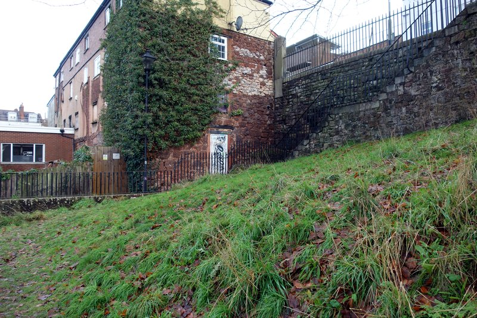
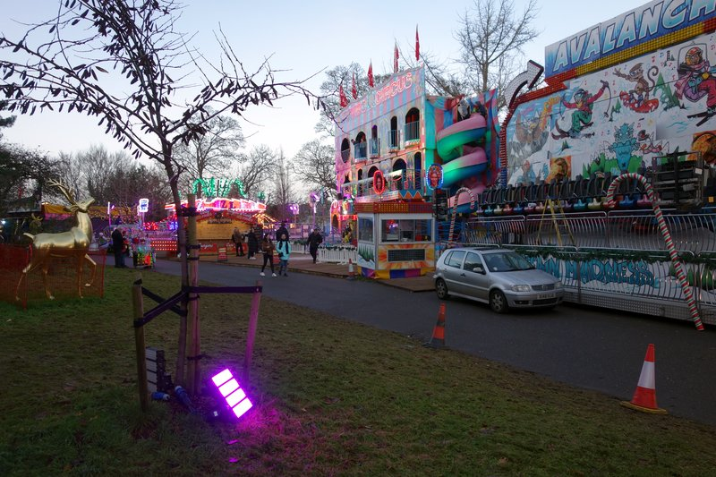
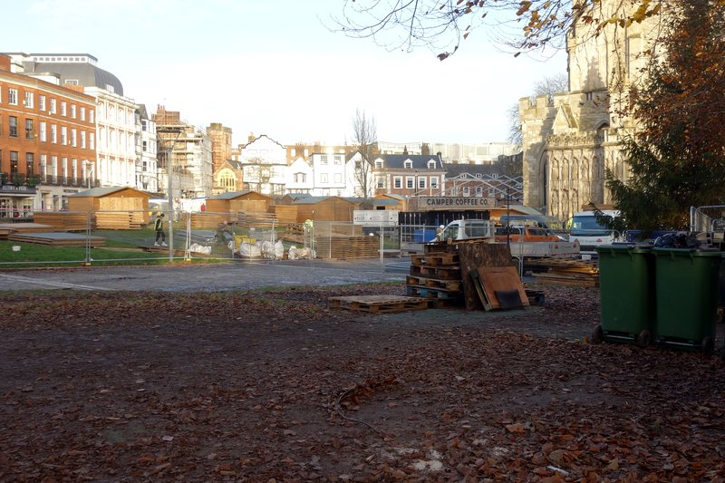
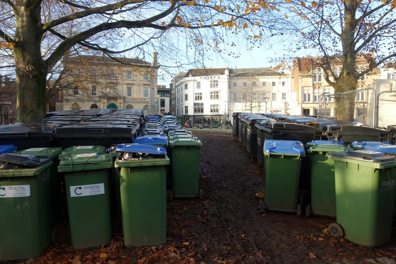

When Exeter City Council celebrates its ranking in a laudatory press releases it is usually just amplifying content marketing messages concocted by companies which want free publicity.
Most recently we saw this in a Hampshire ceramic tile wholesaler’s judgement that Exeter is the UK’s third most aesthetic city and in the council marketing department’s translation of Heavitree Pleasure Ground’s appearance on a list of 74 parks into the headline “Heavitree park wins local favourite award in nationwide poll”.
The council has been susceptible to this form of flattery for a long time (see Irwin Mitchell “UK Powerhouse” reports and the Leicester builder’s merchant). However when a headline claim about Exeter is based on peer-reviewed academic research with a robust methodology, as it was last month, simply dismissing the hype as marketing guff is not enough.
In this case the headline was “Scientists have named Exeter city centre as the greenest in Britain based on tree cover and the presence of parks”, as correctly presented by BBC news, although this was subsequently misrepresented as “Exeter is the greenest city in Britain” on social media by a BBC journalist then repeated in that form by Exeter Labour Party and two of its councillors.
The substance of the story was also (more or less) correctly presented Sky News and The Times alongside around 150 other news channels, most of which got the headline about right, although The Guardian got it wrong with “Study reveals Britain’s greenest cities”.
Local media fell into the same trap. Devon Live went with “Exeter named greenest urban city in Britain” (repeated by another journalist) and Grow Exeter had “Exeter named the greenest city in Britain” (although it was only the headlines that were substantively incorrect in both stories).
Exeter City Council’s marketing team went for a metaphor, “Exeter top of the tree for green open spaces”, which also misrepresented the source material, and added misleading context for good measure in the body too.
It may be true that “Exeter enjoys a range of green open spaces including six valley parks managed by Devon Wildlife Trust, numerous parks, sports pitches, 1,400 allotments and a number of leafy cemeteries”, but this has next to nothing to do with the research on which the story was based.
Exeter wasn’t ranked top for tree cover, either.
Distribution of the 68 urban centres included in the research study.
Includes material licensed under Creative Commons.
So what were the research findings, by academics from the University of Sheffield and elsewhere, on which the story was based?
Their objective was to map and characterise the green attributes of urban centres based on three measures: vegetation cover, tree cover and the amount of publicly accessible green space.
They identified 68 urban centres in municipalities with populations of at least 100,000 using Consumer Data Research Centre (CDRC) spatial data that captures the location of retail areas. Several London centres were included on this basis and Northern Ireland was excluded because of insufficient data.
Exeter’s city centre retail area was ranked top for vegetation cover, second for tree cover and third for publicly accessible green space. Combining these rankings placed it first overall.
Several of its central green spaces were included in the study, although the retail area boundaries meant only parts of some were counted. A total of a little over 34,000m2 of green space was identified inside the city centre retail area.
Land beside the cathedral accounted for 55% of the total and Southernhay nearly 22%. Both were included in their entirety.
 Publicly-accessible city centre retail area green space in St Bartholomew’s Cemetery.
Part of Rougemont Gardens and parts of Northernhay Gardens were also included, accounting for 20% together, and a corner of Friernhay made up just under 3%.
A tiny 46m2 triangle in St Bartholomew’s Cemetery and 2m2 of St David’s churchyard were also inside the boundary, if difficult to access on the ground.
Members of the public were quick to observe not only that the study concerned city centres, not whole cities, but also that a lot of these spaces are not really part of Exeter’s city centre retail area.
They also pointed out that the research results largely reflect the inclusion of land around an 11th century cathedral and castle and a 13th century meadow in the retail area.
That most of cathedral green has been covered with market stalls for the past month and a fun fair is nearly filling Northernhay Gardens did not escape people either.
Contains ESRC CDRC data inc. LDC data 2015 and CDRC data 2017; public sector information licensed under the Open Government Licence v3.0; satellite imagery © 2022 CNES/Airbus, Getmapping plc, Infoterra Ltd & Bluesky, Maxar Technologies.
Publicly-accessible Exeter green spaces (and sports facilities) in green.
Exeter city centre retail area as per 2017 CDRC data in orange.
Intersection of green spaces and retail area in yellow.
All this appeared lost on city council leader Phil Bialyk, however, when he appeared on BBC Radio Devon to exult in Exeter’s latest status update.
He claimed the research results justified recent council decisions at Northbrook and Clifton Hill, neither of which are anywhere near the city centre retail area examined in the study, although he neglected to mention that it was community campaign to save Northbrook golf course that caused the reversal of the council’s plan to sell it for redevelopment.
He also didn’t seem to think that the eight centuries that have passed since Southernhay was enclosed and the ten since the cathedral and castle were founded were any reason for the council not to claim credit for the results, a view shared by Exeter MP Ben Bradshaw.
Labour councillor Martin Pearce chimed in to add that “lots of work by an amazing number of people over many years” had led to this position, although we don’t think he had medieval stonemasons in mind.
 Northernhay Gardens: currently more fun fair than pleasure promenade.
The council leader talked up the prospect of decarbonising transport and housing, saying this would make Exeter a “place where people want to come and live”.
He seems not to see the causal connection between the council relentlessly marketing “Liveable Exeter” as a destination for equity-rich incomers and the housing crisis that is gripping the city.
St Petrock’s says Exeter homelessness has doubled in the past twelve months to one of the highest levels in the country yet the council’s own property development company is urging people to move here because hardly anyone who already lives here will be able to afford the houses it plans to build.
He also managed to get in a plug for the council’s new leisure centre at St Sidwell’s Point, but didn’t mention that the enormous carbon footprint of its construction had been responsible for nearly a third of the council’s total greenhouse gas emissions in 2020-21 alone, or that the council was going to have to find another £3 million to pay for it on top of the £42 million it had already cost.
 Cathedral Green: fenced off, trampled down and covered in sheds.
An assortment of other Exeter Labour councillors and cheerleaders got in on the act too. But did the Sheffield academics intend their findings to be repurposed to help sell the city to wealthy downshifters?
They said their research work was concerned with the role access to green spaces plays in human health and social equity, with a particular focus on urban retail centres as people from a wide range of backgrounds spend a lot of time in them.
They emphasised the importance of socioecological justice, “the equal and fair distribution of environmental resources and benefits”, a concept that is about as far away from the local Labour leadership’s thinking as Sheffield is from Exeter.
Their explanation for Exeter’s results on their research metrics was that “Exeter, a small city in England’s remote south-west, largely avoided the rapid industrial growth of better-connected cities” while “places like Glasgow and Sheffield were massive industrial powerhouses with considerable urban sprawl, though they do still have luscious parks outside of their city centres”.
As many others have also observed, they said the principal drivers of Exeter’s results were “differences in historical development”. So not, then, the actions of the local Labour party.
Contains CDRC data, an ESRC data investment, under project ID CDRC 498-01, ES/L011840/1; ES/L011891/1; public sector information licensed under the Open Government Licence v3.0; satellite imagery © 2022 CNES/Airbus, Getmapping plc, Infoterra Ltd & Bluesky, Maxar Technologies.
Publicly-accessible Exeter green spaces (and sports facilities) in green.
Exeter city centre retail area as per 2017 CDRC data in orange.
Exeter city centre retail area as per 2022 CDRC data in blue.
Intersection of green spaces and retail area as per 2022 data in yellow.
The research paper was published on 23 November but had been submitted in October the previous year, a consequence of slow academic journal peer review and publication processes.
The CDRC city centre retail area boundaries on which it was based were from 2017, based on a 2015 retail units location dataset which was based, in turn, on retail centre locations from a 2005 government report.
In March this year, the CDRC retail centre boundaries were replaced with significantly updated data, which was revised again this month. These provide a very different and clearly more accurate account of what constitutes Exeter’s city centre retail area – and also exclude most of the green space that the 2017 data ruled in.
The Sheffield academics didn’t have access to this data when they performed their research, and we don’t know how Exeter city centre would compare with the other 67 urban areas were the research performed again with the new and more accurate boundaries.
Exeter Observer always tries to dig deep, but we’re locally-focussed public interest journalists and not a university research team (although we couldn’t resist taking a look at the boundary changes in central London, which are significant too).
However we can say that the size of the publicly-accessible Exeter city centre green space according to the 2022 CDRC data is just over 8,000m2 – less than a quarter of the area included in the 2017 CDRC area boundaries.
 Another view of Cathedral Green, looking westward through the trees.
Whatever the revised national results would be, we’re sure that misleading marketing does Exeter more harm than good when it sends housing costs soaring past what residents relying on the city’s economy can afford by setting them against the much higher spending power of downshifters from the south east and student parents who live elsewhere.
Rather than seeking to claim credit for a city centre layout that was established centuries ago, we think it behoves Exeter Labour to take responsibility for the effects its decisions have had over the past ten years, both around the way it promotes the city and the impact of the university’s expansion on the city’s private rented housing stock, nearly three quarters of which is now occupied by students.
The council may not intend to address Exeter’s economic and social problems by displacing people who already live here with much wealthier incomers but its policies and practices, which prioritise the extraction of wealth by remote financial interests over its local creation and retention, are having that effect.
This cautionary story is also a reminder of the importance of examining the basis of public claims, especially when they are being made by politicians about their performance. The Sheffield academics interrogate the data on which their conclusions depend. Exeter’s leaders have no excuse not to do the same.


{kind=link}
{kind=link}
{kind=link}
{kind=link}